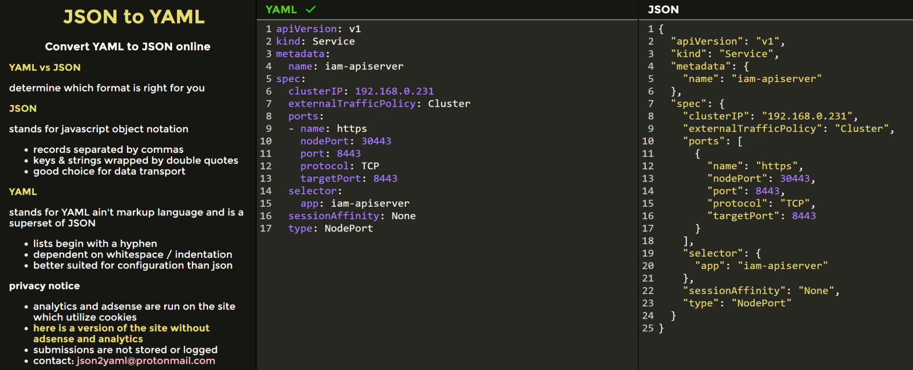
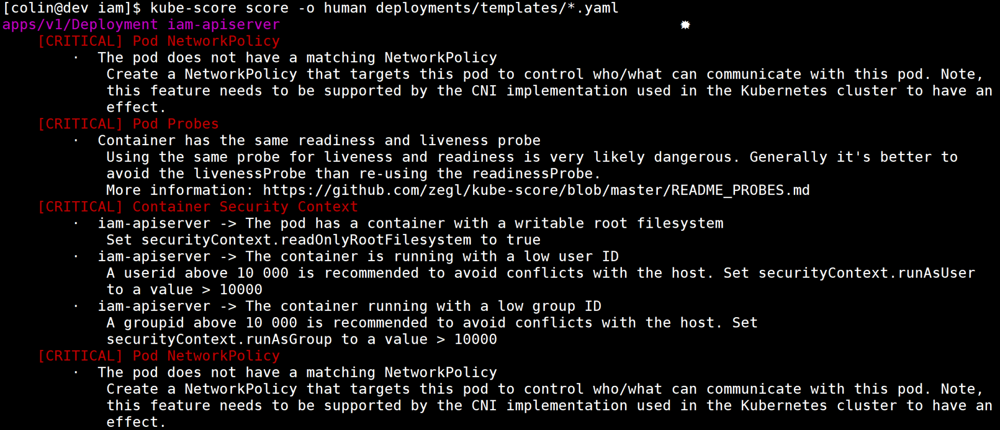

- 00 开篇词 从 0 开始搭建一个企业级 Go 应用.md.html
- 01 IAM系统概述：我们要实现什么样的 Go 项目？.md.html
- 02 环境准备：如何安装和配置一个基本的 Go 开发环境？.md.html
- 03 项目部署：如何快速部署 IAM 系统？.md.html
- 04 规范设计（上）：项目开发杂乱无章，如何规范？.md.html
- 05 规范设计（下）：commit 信息风格迥异、难以阅读，如何规范？.md.html
- 06 目录结构设计：如何组织一个可维护、可扩展的代码目录？.md.html
- 07 工作流设计：如何设计合理的多人开发模式？.md.html
- 08 研发流程设计（上）：如何设计 Go 项目的开发流程？.md.html
- 09 研发流程设计（下）：如何管理应用的生命周期？.md.html
- 10 设计方法：怎么写出优雅的 Go 项目？.md.html
- 11 设计模式：Go常用设计模式概述.md.html
- 12 API 风格（上）：如何设计RESTful API？.md.html
- 13 API 风格（下）：RPC API介绍.md.html
- 14 项目管理：如何编写高质量的Makefile？.md.html
- 15 研发流程实战：IAM项目是如何进行研发流程管理的？.md.html
- 16 代码检查：如何进行静态代码检查？.md.html
- 17 API 文档：如何生成 Swagger API 文档 ？.md.html
- 18 错误处理（上）：如何设计一套科学的错误码？.md.html
- 19 错误处理（下）：如何设计错误包？.md.html
- 20 日志处理（上）：如何设计日志包并记录日志？.md.html
- 21 日志处理（下）：手把手教你从 0 编写一个日志包.md.html
- 22 应用构建三剑客：Pflag、Viper、Cobra 核心功能介绍.md.html
- 23 应用构建实战：如何构建一个优秀的企业应用框架？.md.html
- 24 Web 服务：Web 服务核心功能有哪些，如何实现？.md.html
- 25 认证机制：应用程序如何进行访问认证？.md.html
- 26 IAM项目是如何设计和实现访问认证功能的？.md.html
- 27 权限模型：5大权限模型是如何进行资源授权的？.md.html
- 28 控制流（上）：通过iam-apiserver设计，看Web服务的构建.md.html
- 29 控制流（下）：iam-apiserver服务核心功能实现讲解.md.html
- 30 ORM：CURD 神器 GORM 包介绍及实战.md.html
- 31 数据流：通过iam-authz-server设计，看数据流服务的设计.md.html
- 32 数据处理：如何高效处理应用程序产生的数据？.md.html
- 33 SDK 设计（上）：如何设计出一个优秀的 Go SDK？.md.html
- 34 SDK 设计（下）：IAM项目Go SDK设计和实现.md.html
- 35 效率神器：如何设计和实现一个命令行客户端工具？.md.html
- 36 代码测试（上）：如何编写 Go 语言单元测试和性能测试用例？.md.html
- 37 代码测试（下）：Go 语言其他测试类型及 IAM 测试介绍.md.html
- 38 性能分析（上）：如何分析 Go 语言代码的性能？.md.html
- 39 性能分析（下）：API Server性能测试和调优实战.md.html
- 40 软件部署实战（上）：部署方案及负载均衡、高可用组件介绍.md.html
- 41 软件部署实战（中）：IAM 系统生产环境部署实战.md.html
- 42 软件部署实战（下）：IAM系统安全加固、水平扩缩容实战.md.html
- 43 技术演进（上）：虚拟化技术演进之路.md.html
- 44 技术演进（下）：软件架构和应用生命周期技术演进之路.md.html
- 45 基于Kubernetes的云原生架构设计.md.html
- 46 如何制作Docker镜像？.md.html
- 47 如何编写Kubernetes资源定义文件？.md.html
- 48 IAM 容器化部署实战.md.html
- 49 服务编排（上）：Helm服务编排基础知识.md.html
- 50 服务编排（下）：基于Helm的服务编排部署实战.md.html
- 51 基于 GitHub Actions 的 CI 实战.md.html
- 特别放送 Go Modules依赖包管理全讲.md.html
- 特别放送 Go Modules实战.md.html
- 特别放送 IAM排障指南.md.html
- 特别放送 分布式作业系统设计和实现.md.html
- 特别放送 给你一份Go项目中最常用的Makefile核心语法.md.html
- 特别放送 给你一份清晰、可直接套用的Go编码规范.md.html
- 直播加餐 如何从小白进阶成 Go 语言专家？.md.html
- 结束语 如何让自己的 Go 研发之路走得更远？.md.html
- 捐赠
47 如何编写Kubernetes资源定义文件？
你好，我是孔令飞。
在接下来的48讲，我会介绍如何基于腾讯云EKS来部署IAM应用。EKS其实是一个标准的Kubernetes集群，在Kubernetes集群中部署应用，需要编写Kubernetes资源的YAML（Yet Another Markup Language）定义文件，例如Service、Deployment、ConfigMap、Secret、StatefulSet等。
这些YAML定义文件里面有很多配置项需要我们去配置，其中一些也比较难理解。为了你在学习下一讲时更轻松，这一讲我们先学习下如何编写Kubernetes YAML文件。
为什么选择YAML格式来定义Kubernetes资源？
首先解释一下，我们为什么使用YAML格式来定义Kubernetes的各类资源呢？这是因为YAML格式和其他格式（例如XML、JSON等）相比，不仅能够支持丰富的数据，而且结构清晰、层次分明、表达性极强、易于维护，非常适合拿来供开发者配置和管理Kubernetes资源。
其实Kubernetes支持YAML和JSON两种格式，JSON格式通常用来作为接口之间消息传递的数据格式，YAML格式则用于资源的配置和管理。YAML和JSON这两种格式是可以相互转换的，你可以通过在线工具json2yaml，来自动转换YAML和JSON数据格式。
例如，下面是一个YAML文件中的内容：
apiVersion: v1
kind: Service
metadata:
name: iam-apiserver
spec:
clusterIP: 192.168.0.231
externalTrafficPolicy: Cluster
ports:
- name: https
nodePort: 30443
port: 8443
protocol: TCP
targetPort: 8443
selector:
app: iam-apiserver
sessionAffinity: None
type: NodePort
它对应的JSON格式的文件内容为：
{
"apiVersion": "v1",
"kind": "Service",
"metadata": {
"name": "iam-apiserver"
},
"spec": {
"clusterIP": "192.168.0.231",
"externalTrafficPolicy": "Cluster",
"ports": [
{
"name": "https",
"nodePort": 30443,
"port": 8443,
"protocol": "TCP",
"targetPort": 8443
}
],
"selector": {
"app": "iam-apiserver"
},
"sessionAffinity": "None",
"type": "NodePort"
}
}
我就是通过json2yaml在线工具，来转换YAML和JSON的，如下图所示：

在编写Kubernetes资源定义文件的过程中，如果因为YAML格式文件中的配置项缩进太深，导致不容易判断配置项的层级，那么，你就可以将其转换成JSON格式，通过JSON格式来判断配置型的层级。
如果想学习更多关于YAML的知识，你可以参考YAML 1.2 (3rd Edition)。这里，可以先看看我整理的YAML基本语法：
- 属性和值都是大小写敏感的。
- 使用缩进表示层级关系。
- 禁止使用Tab键缩进，只允许使用空格，建议两个空格作为一个层级的缩进。元素左对齐，就说明对齐的两个元素属于同一个级别。
- 使用
#进行注释，直到行尾。 key: value格式的定义中，冒号后要有一个空格。- 短横线表示列表项，使用一个短横线加一个空格；多个项使用同样的缩进级别作为同一列表。
- 使用
---表示一个新的YAML文件开始。
现在你知道了，Kubernetes支持YAML和JSON两种格式，它们是可以相互转换的。但鉴于YAML格式的各项优点，我建议你使用YAML格式来定义Kubernetes的各类资源。
Kubernetes 资源定义概述
Kubernetes中有很多内置的资源，常用的资源有Deployment、StatefulSet、ConfigMap、Service、Secret、Nodes、Pods、Events、Jobs、DaemonSets等。除此之外，Kubernetes还有其他一些资源。如果你觉得Kubernetes内置的资源满足不了需求，还可以自定义资源。
Kubernetes的资源清单可以通过执行以下命令来查看：
$ kubectl api-resources
NAME SHORTNAMES APIVERSION NAMESPACED KIND
bindings v1 true Binding
componentstatuses cs v1 false ComponentStatus
configmaps cm v1 true ConfigMap
endpoints ep v1 true Endpoints
events ev v1 true Event
上述输出中，各列的含义如下。
- NAME：资源名称。
- SHORTNAMES：资源名称简写。
- APIVERSION：资源的API版本，也称为group。
- NAMESPACED：资源是否具有Namespace属性。
- KIND：资源类别。
这些资源有一些共同的配置，也有一些特有的配置。这里，我们先来看下这些资源共同的配置。
下面这些配置是Kubernetes各类资源都具备的：
---
apiVersion: <string> # string类型，指定group的名称，默认为core。可以使用 `kubectl api-versions` 命令，来获取当前kubernetes版本支持的所有group。
kind: <string> # string类型，资源类别。
metadata: <Object> # 资源的元数据。
name: <string> # string类型，资源名称。
namespace: <string> # string类型，资源所属的命名空间。
lables: < map[string]string> # map类型，资源的标签。
annotations: < map[string]string> # map类型，资源的标注。
selfLink: <string> # 资源的 REST API路径，格式为：/api/<group>/namespaces/<namespace>/<type>/<name>。例如：/api/v1/namespaces/default/services/iam-apiserver
spec: <Object> # 定义用户期望的资源状态（disired state）。
status: <Object> # 资源当前的状态，以只读的方式显示资源的最近状态。这个字段由kubernetes维护，用户无法定义。
你可以通过kubectl explain <object>命令来查看Object资源对象介绍，并通过kubectl explain <object1>.<object2>来查看<object1>的子对象<object2>的资源介绍，例如：
$ kubectl explain service
$ kubectl explain service.spec
$ kubectl explain service.spec.ports
Kubernetes资源定义YAML文件，支持以下数据类型：
- string，表示字符串类型。
- object，表示一个对象，需要嵌套多层字段。
- map[string]string，表示由key:value组成的映射。
- []string，表示字串列表。
- []object，表示对象列表。
- boolean，表示布尔类型。
- integer，表示整型。
常用的Kubernetes资源定义
上面说了，Kubernetes中有很多资源，其中Pod、Deployment、Service、ConfigMap这4类是比较常用的资源，我来一个个介绍下。
Pod资源定义
下面是一个Pod的YAML定义：
apiVersion: v1 # 必须 版本号， 常用v1 apps/v1
kind: Pod # 必须
metadata: # 必须，元数据
name: string # 必须，名称
namespace: string # 必须，命名空间，默认上default,生产环境为了安全性建议新建命名空间分类存放
labels: # 非必须，标签，列表值
- name: string
annotations: # 非必须，注解，列表值
- name: string
spec: # 必须，容器的详细定义
containers: #必须，容器列表，
- name: string #必须，容器1的名称
image: string #必须，容器1所用的镜像
imagePullPolicy: [Always|Never|IfNotPresent] #非必须，镜像拉取策略，默认是Always
command: [string] # 非必须 列表值，如果不指定，则是一镜像打包时使用的启动命令
args: [string] # 非必须，启动参数
workingDir: string # 非必须，容器内的工作目录
volumeMounts: # 非必须，挂载到容器内的存储卷配置
- name: string # 非必须，存储卷名字，需与【@1】处定义的名字一致
readOnly: boolean #非必须，定义读写模式，默认是读写
ports: # 非必须，需要暴露的端口
- name: string # 非必须 端口名称
containerPort: int # 非必须 端口号
hostPort: int # 非必须 宿主机需要监听的端口号，设置此值时，同一台宿主机不能存在同一端口号的pod， 建议不要设置此值
proctocol: [tcp|udp] # 非必须 端口使用的协议，默认是tcp
env: # 非必须 环境变量
- name: string # 非必须 ，环境变量名称
value: string # 非必须，环境变量键值对
resources: # 非必须，资源限制
limits: # 非必须，限制的容器使用资源的最大值，超过此值容器会推出
cpu: string # 非必须，cpu资源，单位是core，从0.1开始
memory: string 内存限制，单位为MiB,GiB
requests: # 非必须，启动时分配的资源
cpu: string
memory: string
livenessProbe: # 非必须，容器健康检查的探针探测方式
exec: # 探测命令
command: [string] # 探测命令或者脚本
httpGet: # httpGet方式
path: string # 探测路径，例如 http://ip:port/path
port: number
host: string
scheme: string
httpHeaders:
- name: string
value: string
tcpSocket: # tcpSocket方式，检查端口是否存在
port: number
initialDelaySeconds: 0 #容器启动完成多少秒后的再进行首次探测，单位为s
timeoutSeconds: 0 #探测响应超时的时间,默认是1s,如果失败，则认为容器不健康，会重启该容器
periodSeconds: 0 # 探测间隔时间，默认是10s
successThreshold: 0 #
failureThreshold: 0
securityContext:
privileged: false
restartPolicy: [Always|Never|OnFailure] # 容器重启的策略，
nodeSelector: object # 指定运行的宿主机
imagePullSecrets: # 容器下载时使用的Secrets名称，需要与valumes.secret中定义的一致
- name: string
hostNetwork: false
volumes: ## 挂载的共享存储卷类型
- name: string # 非必须，【@1】
emptyDir: {}
hostPath:
path: string
secret: # 类型为secret的存储卷，使用内部的secret内的items值作为环境变量
secrectName: string
items:
- key: string
path: string
configMap: ## 类型为configMap的存储卷
name: string
items:
- key: string
path: string
Pod是Kubernetes中最重要的资源，我们可以通过Pod YAML定义来创建一个Pod，也可以通过DaemonSet、Deployment、ReplicaSet、StatefulSet、Job、CronJob来创建Pod。
Deployment资源定义
Deployment资源定义YAML文件如下：
apiVersion: apps/v1
kind: Deployment
metadata:
labels: # 设定资源的标签
app: iam-apiserver
name: iam-apiserver
namespace: default
spec:
progressDeadlineSeconds: 10 # 指定多少时间内不能完成滚动升级就视为失败，滚动升级自动取消
replicas: 1 # 声明副本数，建议 >= 2
revisionHistoryLimit: 5 # 设置保留的历史版本个数，默认是10
selector: # 选择器
matchLabels: # 匹配标签
app: iam-apiserver # 标签格式为key: value对
strategy: # 指定部署策略
rollingUpdate:
maxSurge: 1 # 最大额外可以存在的副本数，可以为百分比，也可以为整数
maxUnavailable: 1 # 表示在更新过程中能够进入不可用状态的 Pod 的最大值，可以为百分比，也可以为整数
type: RollingUpdate # 更新策略，包括：重建(Recreate)、RollingUpdate(滚动更新)
template: # 指定Pod创建模板。注意：以下定义为Pod的资源定义
metadata: # 指定Pod的元数据
labels: # 指定Pod的标签
app: iam-apiserver
spec:
affinity:
podAntiAffinity: # Pod反亲和性，尽量避免同一个应用调度到相同Node
preferredDuringSchedulingIgnoredDuringExecution: # 软需求
- podAffinityTerm:
labelSelector:
matchExpressions: # 有多个选项，只有同时满足这些条件的节点才能运行 Pod
- key: app
operator: In # 设定标签键与一组值的关系，In、NotIn、Exists、DoesNotExist
values:
- iam-apiserver
topologyKey: kubernetes.io/hostname
weight: 100 # weight 字段值的范围是1-100。
containers:
- command: # 指定运行命令
- /opt/iam/bin/iam-apiserver # 运行参数
- --config=/etc/iam/iam-apiserver.yaml
image: ccr.ccs.tencentyun.com/lkccc/iam-apiserver-amd64:v1.0.6 # 镜像名，遵守镜像命名规范
imagePullPolicy: Always # 镜像拉取策略。IfNotPresent：优先使用本地镜像；Never：使用本地镜像，本地镜像不存在，则报错；Always：默认值，每次都重新拉取镜像
# lifecycle: # kubernetes支持postStart和preStop事件。当一个容器启动后，Kubernetes将立即发送postStart事件；在容器被终结之前，Kubernetes将发送一个preStop事件
name: iam-apiserver # 容器名称，与应用名称保持一致
ports: # 端口设置
- containerPort: 8443 # 容器暴露的端口
name: secure # 端口名称
protocol: TCP # 协议，TCP和UDP
livenessProbe: # 存活检查，检查容器是否正常，不正常则重启实例
httpGet: # HTTP请求检查方法
path: /healthz # 请求路径
port: 8080 # 检查端口
scheme: HTTP # 检查协议
initialDelaySeconds: 5 # 启动延时，容器延时启动健康检查的时间
periodSeconds: 10 # 间隔时间，进行健康检查的时间间隔
successThreshold: 1 # 健康阈值，表示后端容器从失败到成功的连续健康检查成功次数
failureThreshold: 1 # 不健康阈值，表示后端容器从成功到失败的连续健康检查成功次数
timeoutSeconds: 3 # 响应超时，每次健康检查响应的最大超时时间
readinessProbe: # 就绪检查，检查容器是否就绪，不就绪则停止转发流量到当前实例
httpGet: # HTTP请求检查方法
path: /healthz # 请求路径
port: 8080 # 检查端口
scheme: HTTP # 检查协议
initialDelaySeconds: 5 # 启动延时，容器延时启动健康检查的时间
periodSeconds: 10 # 间隔时间，进行健康检查的时间间隔
successThreshold: 1 # 健康阈值，表示后端容器从失败到成功的连续健康检查成功次数
failureThreshold: 1 # 不健康阈值，表示后端容器从成功到失败的连续健康检查成功次数
timeoutSeconds: 3 # 响应超时，每次健康检查响应的最大超时时间
startupProbe: # 启动探针，可以知道应用程序容器什么时候启动了
failureThreshold: 10
httpGet:
path: /healthz
port: 8080
scheme: HTTP
initialDelaySeconds: 5
periodSeconds: 10
successThreshold: 1
timeoutSeconds: 3
resources: # 资源管理
limits: # limits用于设置容器使用资源的最大上限,避免异常情况下节点资源消耗过多
cpu: "1" # 设置cpu limit，1核心 = 1000m
memory: 1Gi # 设置memory limit，1G = 1024Mi
requests: # requests用于预分配资源,当集群中的节点没有request所要求的资源数量时,容器会创建失败
cpu: 250m # 设置cpu request
memory: 500Mi # 设置memory request
terminationMessagePath: /dev/termination-log # 容器终止时消息保存路径
terminationMessagePolicy: File # 仅从终止消息文件中检索终止消息
volumeMounts: # 挂载日志卷
- mountPath: /etc/iam/iam-apiserver.yaml # 容器内挂载镜像路径
name: iam # 引用的卷名称
subPath: iam-apiserver.yaml # 指定所引用的卷内的子路径，而不是其根路径。
- mountPath: /etc/iam/cert
name: iam-cert
dnsPolicy: ClusterFirst
restartPolicy: Always # 重启策略，Always、OnFailure、Never
schedulerName: default-scheduler # 指定调度器的名字
imagePullSecrets: # 在Pod中设置ImagePullSecrets只有提供自己密钥的Pod才能访问私有仓库
- name: ccr-registry # 镜像仓库的Secrets需要在集群中手动创建
securityContext: {} # 指定安全上下文
terminationGracePeriodSeconds: 5 # 优雅关闭时间，这个时间内优雅关闭未结束，k8s 强制 kill
volumes: # 配置数据卷，类型详见https://kubernetes.io/zh/docs/concepts/storage/volumes
- configMap: # configMap 类型的数据卷
defaultMode: 420 #权限设置0~0777，默认0664
items:
- key: iam-apiserver.yaml
path: iam-apiserver.yaml
name: iam # configmap名称
name: iam # 设置卷名称，与volumeMounts名称对应
- configMap:
defaultMode: 420
name: iam-cert
name: iam-cert
在部署时，你可以根据需要来配置相应的字段，常见的需要配置的字段为：labels、name、namespace、replicas、command、imagePullPolicy、container.name、livenessProbe、readinessProbe、resources、volumeMounts、volumes、imagePullSecrets等。
另外，在部署应用时，经常需要提供配置文件，供容器内的进程加载使用。最常用的方法是挂载ConfigMap到应用容器中。那么，如何挂载ConfigMap到容器中呢？
引用 ConfigMap 对象时，你可以在 volume 中通过它的名称来引用。你可以自定义 ConfigMap 中特定条目所要使用的路径。下面的配置就显示了如何将名为 log-config 的 ConfigMap 挂载到名为 configmap-pod 的 Pod 中：
apiVersion: v1
kind: Pod
metadata:
name: configmap-pod
spec:
containers:
- name: test
image: busybox
volumeMounts:
- name: config-vol
mountPath: /etc/config
volumes:
- name: config-vol
configMap:
name: log-config
items:
- key: log_level
path: log_level
log-config ConfigMap 以卷的形式挂载，并且存储在 log_level 条目中的所有内容都被挂载到 Pod 的/etc/config/log_level 路径下。 请注意，这个路径来源于卷的 mountPath 和 log_level 键对应的path。
这里需要注意，在使用 ConfigMap 之前，你首先要创建它。接下来，我们来看下ConfigMap定义。
ConfigMap资源定义
下面是一个ConfigMap YAML示例：
apiVersion: v1
kind: ConfigMap
metadata:
name: test-config4
data: # 存储配置内容
db.host: 172.168.10.1 # 存储格式为key: value
db.port: 3306
可以看到，ConfigMap的YAML定义相对简单些。假设我们将上述YAML文件保存在了iam-configmap.yaml文件中，我们可以执行以下命令，来创建ConfigMap：
$ kubectl create -f iam-configmap.yaml
除此之外，kubectl命令行工具还提供了3种创建ConfigMap的方式。我来分别介绍下。
1）通过--from-literal参数创建
创建命令如下：
$ kubectl create configmap iam-configmap --from-literal=db.host=172.168.10.1 --from-literal=db.port='3306'
2）通过--from-file=<文件>参数创建
创建命令如下：
$ echo -n 172.168.10.1 > ./db.host
$ echo -n 3306 > ./db.port
$ kubectl create cm iam-configmap --from-file=./db.host --from-file=./db.port
--from-file的值也可以是一个目录。当值是目录时，目录中的文件名为key，目录的内容为value。
3）通过--from-env-file参数创建
创建命令如下：
$ cat << EOF > env.txt
db.host=172.168.10.1
db.port=3306
EOF
$ kubectl create cm iam-configmap --from-env-file=env.txt
Service资源定义
Service 是 Kubernetes 另一个核心资源。通过创建 Service，可以为一组具有相同功能的容器应用提供一个统一的入口地址，并且将请求负载到后端的各个容器上。Service资源定义YAML文件如下：
apiVersion: v1
kind: Service
metadata:
labels:
app: iam-apiserver
name: iam-apiserver
namespace: default
spec:
clusterIP: 192.168.0.231 # 虚拟服务地址
externalTrafficPolicy: Cluster # 表示此服务是否希望将外部流量路由到节点本地或集群范围的端点
ports: # service需要暴露的端口列表
- name: https #端口名称
nodePort: 30443 # 当type = NodePort时，指定映射到物理机的端口号
port: 8443 # 服务监听的端口号
protocol: TCP # 端口协议，支持TCP和UDP，默认TCP
targetPort: 8443 # 需要转发到后端Pod的端口号
selector: # label selector配置，将选择具有label标签的Pod作为其后端RS
app: iam-apiserver
sessionAffinity: None # 是否支持session
type: NodePort # service的类型，指定service的访问方式，默认为clusterIp
上面，我介绍了常用的Kubernetes YAML的内容。我们在部署应用的时候，是需要手动编写这些文件的。接下来，我就讲解一些在编写过程中常用的编写技巧。
YAML文件编写技巧
这里我主要介绍三个技巧。
1）使用在线的工具来自动生成模板YAML文件。
YAML文件很复杂，完全从0开始编写一个YAML定义文件，工作量大、容易出错，也没必要。我比较推荐的方式是，使用一些工具来自动生成所需的YAML。
这里我推荐使用k8syaml工具。k8syaml是一个在线的YAML生成工具，当前能够生成Deployment、StatefulSet、DaemonSet类型的YAML文件。k8syaml具有默认值，并且有对各字段详细的说明，可以供我们填参时参考。
2）使用kubectl run命令获取YAML模板：
$ kubectl run --dry-run=client --image=nginx nginx -o yaml > my-nginx.yaml
$ cat my-nginx.yaml
apiVersion: v1
kind: Pod
metadata:
creationTimestamp: null
labels:
run: nginx
name: nginx
spec:
containers:
- image: nginx
name: nginx
resources: {}
dnsPolicy: ClusterFirst
restartPolicy: Always
status: {}
然后，我们可以基于这个模板，来修改配置，形成最终的YAML文件。
3）导出集群中已有的资源描述。
有时候，如果我们想创建一个Kubernetes资源，并且发现该资源跟集群中已经创建的资源描述相近或者一致的时候，可以选择导出集群中已经创建资源的YAML描述，并基于导出的YAML文件进行修改，获得所需的YAML。例如：
$ kubectl get deployment iam-apiserver -o yaml > iam-authz-server.yaml
接着，修改iam-authz-server.yaml。通常，我们需要删除Kubernetes自动添加的字段，例如kubectl.kubernetes.io/last-applied-configuration、deployment.kubernetes.io/revision、creationTimestamp、generation、resourceVersion、selfLink、uid、status。
这些技巧可以帮助我们更好地编写和使用Kubernetes YAML。
使用Kubernetes YAML时的一些推荐工具
接下来，我再介绍一些比较流行的工具，你可以根据自己的需要进行选择。
kubeval
kubeval可以用来验证Kubernetes YAML是否符合Kubernetes API模式。
安装方法如下：
$ wget https://github.com/instrumenta/kubeval/releases/latest/download/kubeval-linux-amd64.tar.gz
$ tar xf kubeval-linux-amd64.tar.gz
$ mv kubeval $HOME/bin
安装完成后，我们对Kubernetes YAML文件进行验证：
$ kubeval deployments/iam.invalid.yaml
ERR - iam/templates/iam-configmap.yaml: Duplicate 'ConfigMap' resource 'iam' in namespace ''
根据提示，查看iam.yaml，发现在iam.yaml文件中，我们定义了两个同名的iam ConfigMap：
apiVersion: v1
kind: ConfigMap
metadata:
name: iam
data:
{}
---
# Source: iam/templates/iam-configmap.yaml
apiVersion: v1
kind: ConfigMap
metadata:
name: iam
data:
iam-: ""
iam-apiserver.yaml: |
...
可以看到，使用kubeval之类的工具，能让我们在部署的早期，不用访问集群就能发现YAML文件的错误。
kube-score
kube-score能够对Kubernetes YAML进行分析，并根据内置的检查对其评分，这些检查是根据安全建议和最佳实践而选择的，例如：
- 以非Root用户启动容器。
- 为Pods设置健康检查。
- 定义资源请求和限制。
你可以按照这个方法安装：
$ go get github.com/zegl/kube-score/cmd/kube-score
然后，我们对Kubernetes YAML进行评分：
$ kube-score score -o ci deployments/iam.invalid.yaml
[OK] iam-apiserver apps/v1/Deployment
[OK] iam-apiserver apps/v1/Deployment
[OK] iam-apiserver apps/v1/Deployment
[OK] iam-apiserver apps/v1/Deployment
[CRITICAL] iam-apiserver apps/v1/Deployment: The pod does not have a matching NetworkPolicy
[CRITICAL] iam-apiserver apps/v1/Deployment: Container has the same readiness and liveness probe
[CRITICAL] iam-apiserver apps/v1/Deployment: (iam-apiserver) The pod has a container with a writable root filesystem
[CRITICAL] iam-apiserver apps/v1/Deployment: (iam-apiserver) The container is running with a low user ID
[CRITICAL] iam-apiserver apps/v1/Deployment: (iam-apiserver) The container running with a low group ID
[OK] iam-apiserver apps/v1/Deployment
...
检查的结果有OK、SKIPPED、WARNING和CRITICAL。CRITICAL是需要你修复的；WARNING是需要你关注的；SKIPPED是因为某些原因略过的检查；OK是验证通过的。
如果你想查看详细的错误原因和解决方案，可以使用-o human选项，例如：
$ kube-score score -o human deployments/iam.invalid.yaml
上述命令会检查YAML资源定义文件，如果有不合规的地方会报告级别、类别以及错误详情，如下图所示：

当然，除了kubeval、kube-score这两个工具，业界还有其他一些Kubernetes检查工具，例如config-lint、copper、conftest、polaris等。
这些工具，我推荐你这么来选择：首先，使用kubeval工具做最基本的YAML文件验证。验证通过之后，我们就可以进行更多的测试。如果你没有特别复杂的YAML验证要求，只需要用到一些最常见的检查策略，这时候可以使用kube-score。如果你有复杂的验证要求，并且希望能够自定义验证策略，则可以考虑使用copper。当然，polaris、config-lint、copper也值得你去尝试下。
总结
今天，我主要讲了如何编写Kubernetes YAML文件。
YAML格式具有丰富的数据表达能力、清晰的结构和层次，因此被用于Kubernetes资源的定义文件中。如果你要把应用部署在Kubernetes集群中，就要创建多个关联的K8s资源，如果要创建K8s资源，目前比较多的方式还是编写YAML格式的定义文件。
这一讲我介绍了K8s中最常用的四种资源（Pod、Deployment、Service、ConfigMap）的YAML定义的写法，你可以常来温习。
另外，在编写YAML文件时，也有一些技巧。比如，可以通过在线工具k8syaml来自动生成初版的YAML文件，再基于此YAML文件进行二次修改，从而形成终版。
最后，我还给你分享了编写和使用Kubernetes YAML时，社区提供的多种工具。比如，kubeval可以校验YAML，kube-score可以给YAML文件打分。了解了如何编写Kubernetes YAML文件，下一讲的学习相信你会进行得更顺利。
课后练习
- 思考一下，如何将ConfigMap中的Key挂载到同一个目录中，文件名为Key名？
- 使用kubeval检查你正在或之前从事过的项目的K8s YAML定义文件，查看报错，并修改和优化。
欢迎你在留言区和我交流讨论，我们下一讲见。
© 2019 - 2023 Liangliang Lee. Powered by gin and hexo-theme-book.